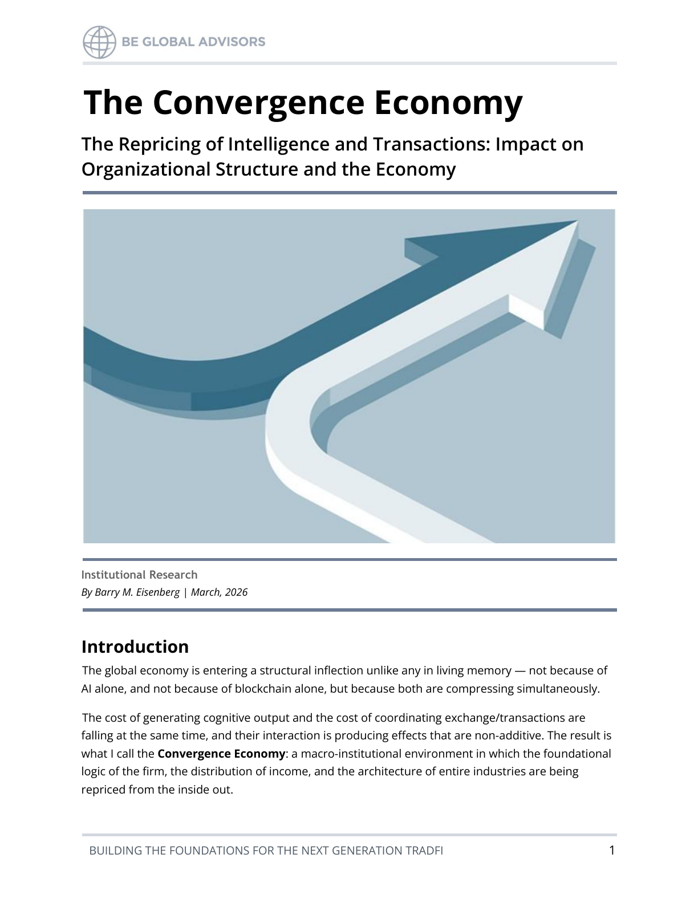

Market Structure
The Convergence Economy

Executive summary
- AI and programmable settlement infrastructure are compressing key economic cost layers simultaneously.
- This dual compression creates new value pools while destabilizing legacy assumptions about coordination and margin structure.
- Institutions should expect competitive advantage to shift toward firms that redesign decision and transaction systems in parallel.
- Leadership teams need integrated strategy across workforce, process, and infrastructure modernization.
- Delay increases transition cost as ecosystem standards and partner expectations mature.
Two historic shifts reinforcing each other
AI lowers cognitive production cost, while programmable financial rails lower transaction coordination cost. Their interaction changes both operating leverage and market design.
Where incumbents face pressure
Businesses optimized for slower cycles and higher intermediation friction may see margin pressure unless they redesign cross-functional operating models.
Executive response
Build transformation roadmaps that jointly evaluate AI capability deployment and settlement/market infrastructure strategy rather than treating them as separate initiatives.